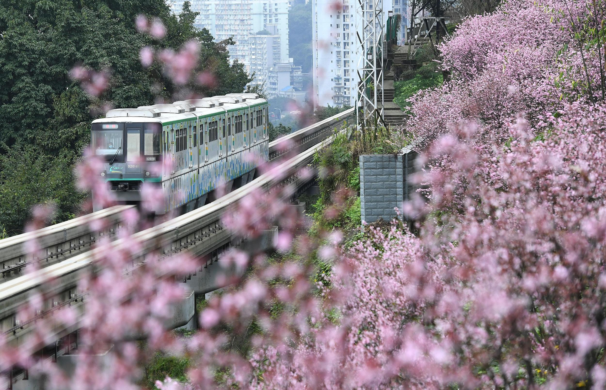

重庆轨道交通（Chongqing Rail Transit
，CRT）是服务于中国重庆主城都市区境内的城市轨道交通系统。其第一条线路于2005年6月18日开通试运营，成为中国内地第九座、西部地区第一座开通城市轨道交通的城市。

截至2023年12月，重庆轨道交通已开通12条线路，运营里程538km（含璧山云巴）。其中，环线、1、4、5、6、9、10、18号线、国博线为地铁系统，2、3号线为单轨系统（跨座式单轨），江跳线为市域（郊）铁路。
截至2023年12月，重庆轨道交通在建线路共12条。
2023年12月31日跨年夜延时运营，重庆轨道交通全线网客运量达508.1万人次，创下历史最高客运量。